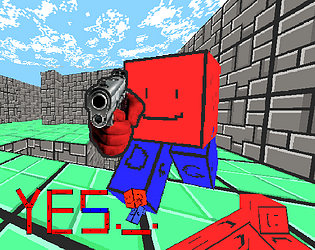

Lien vers la page itch.io
Bienveue dans Yes un Fps sans prise de tête
il y a dans ce jeu le strict minimum pour faire de ce jeu un "first person shooter"
NOTEZ QUE CECI EST UNE BETA
Certains éléments sont encore manquants voir buggé
LE MOD EN LIGNE NE MARCHE PAS mais local oui
installer le jeu
Retour